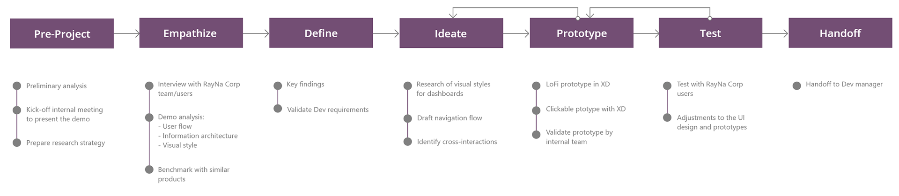

The Challenge
RayNa Corp helps law firms accelerate administrative workflows by deploying tailored operational systems.
A development partner had been engineering a dedicated web application for RayNa Corp for nearly a year. Prior to launch, the client surfaced critical interaction challenges—which were not backend bugs, but severe user experience deficiencies.
The product lifecycle was completely stalled. The client rejected the implementation, and the engineering squad could not proceed without strategic design guidance. The objective required a precise UX intervention to resolve stakeholder objections, establish intuitive navigation architectures for a diverse audience, and deploy modifications safely within the active development constraints.
My Role & Approach
As the Product Designer, I stepped into an active, high-friction development cycle. My core mandate was to:
- Isolate the exact interaction bottlenecks triggering client dissatisfaction.
- Architect high-impact, low-scope interface refinements that could be deployed rapidly without a full system rebuild.
- Successfully bridge the gap between engineering constraints and complex business expectations.
My strategic approach prioritized workspace empathy: I systematically analyzed how administrative professionals interacted with the platform to uncover frustration patterns, streamline operational flows, and directly unblock product delivery.

Discovery & Heuristic Audit
Prior to alignment meetings, I executed a comprehensive heuristic evaluation and interface analysis of the active Web App to thoroughly map:
- Transactional Functionality: Evaluating core navigation flows and data-entry behaviors.
- Feature Architecture: Documenting the existing layout constraints and database relationships.
- Friction Baselines: Categorizing the specific usability objections surfaced at the start of the project lifecycle.


This diagnostic phase isolated clear UX gaps requiring immediate interface architecture refinements:
- Geographical Dropdown Protocols: Transitioning text-entry state fields into standardized selectors to prevent data fragmentation.
- Funnel Optimization: Accelerating internal data processing through advanced search filtering and multi-column sorting algorithms.
- Information Accessibility: Deploying explicit status tracking mechanisms and visual feedback systems to guide user behavior.
Cross-functional alignment: During our internal kick-off session, we audited the active demo, finalized feature scope parameters, mapped development constraints, and prioritized design recommendations to unblock the delivery cycle.
User Research & Workspace Empathy
We executed user interviews via Zoom and analyzed workspace routines recorded on Loom to capture direct behavioral patterns. This user research surfaced a core matrix of user requirements to transform fragmented legacy features into high-adoption dashboards:
Key insights from the interviews
- Law Firms & Admins: Portals to request updates, manage patient folders, and track transactional history logs.
- Providers: Integrated search frameworks, multi-column list sorting, and color-coded verification indicators to manage multi-provider legal claims.
- Ecosystem Tracking: Complete activity logs to track every discrete workspace modification executed across roles.
Information Architecture & User Flow
We restructured the product's information architecture to seamlessly align large volumes of administrative data with user mental models while optimizing core navigational paths.

Benchmarking & Data Design
We analyzed data-heavy enterprise platforms to design optimized dashboard patterns capable of structuring dense legal data layers. The objective was to maintain strict layout simplicity and an authoritative, professional aesthetic without compromising processing efficiency.

Design Strategy
Key decisions
- Data Table Optimization: Retaining the tabular architecture but engineering a scalable, modernized interface pattern.
- Information Hierarchy: Injecting dynamic columns to prioritize high-value core metrics upfront.
- Data Manipulation Controls: Implementing advanced search filters and a robust query system to streamline information processing.
- Temporal Visual Anchors: Utilizing a color-coded framework (traffic light hierarchy) as immediate timeframe indicators.
- Iconography Overhaul: Refining the visual signifier system to improve contextual communication efficiency.
- Corporate Consistency: Aligning the stylistic execution with strict brand guidelines to ensure professional compliance.
- Contextual Guidance: Embedding inline microcopy and systemic validation prompts to guide user interaction.
- Error Mitigation Layouts: Utilizing transactional modal sheets to actively prevent accidental data loss.
Visual style & Interaction Scope
We preserved the core corporate color palette while initiating the interactive phase via Low-Fidelity (LoFi) prototypes. This intentional constraint allowed us to thoroughly isolate layout mechanics, interaction behaviors, and operational user flows before allocating product delivery cycles to high-fidelity visual styling.


Prototype & Validation
We ran alignment sessions to validate both architectural blueprints (Law Firms & Providers flows) against core technical limitations alongside the Engineering Manager and Project Manager.
Prototype walkthrough
A walkthrough of the validated prototypes for both Law Firms and Providers flows.
Testing with real users
Following internal alignment, we conducted usability testing sessions with real RayNa Corp users. The objective was to evaluate interactive task completion rates, diagnose behavioral friction, and harvest qualitative optimization insights.
Feedback & Iteration
Key Insights & Refinements From Usability Testing
- Information Trimming: Deprecating the "Last updated" column after user logs confirmed it created visual clutter without operational value.
- Core Attribute Visibility: Introducing "Send Bills by" and "Send Records by" columns to maximize immediate data accessibility on the dashboard.
- Simplifying Parameters: Condensing validation complexity into 3 explicit states: A) Verified within the last year, B) Verified over a year ago, C) Never verified.
- Action Context: Placing an explicit, quick-action "Verify" trigger directly within the layout rows.
- Component Optimization: Transforming AKA names into responsive UI tags to cleanly manage multi-input string values.
- Data Ingestion Efficiency: Ensuring seamless parsing of external data batches into the primary database.
I systematically iterated both prototypes based on these validation insights before the final client alignment. The structural blueprints received formal stakeholder sign-off, unblocking the active product delivery cycle.
Results & Handoff
The outcome: After months of being completely stalled, the redesigned product framework unblocked the development lifecycle. The client approved the structural user experience layout directly inside the LoFi blueprints, requiring zero high-fidelity visual design overhead and saving critical product cycles.
Handoff Specification: The engineering squad received two fully mapped, production-ready prototypes in Adobe XD:
Key Takeaways
- Strategic Empathy De-escalates Project Friction: When a product lifecycle is stalled, the bottleneck is rarely just technical. Stakeholder frustration often stems from a lack of alignment. Applying a rigorous, evidence-based UX approach allows product teams to translate friction into actionable, prioritized design requirements.
- Navigating Cross-Functional Balancing Acts: Maximizing velocity requires driving continuous alignment between aggressive business expectations and rigid engineering codebase constraints. Resolving this interaction mismatch was the definitive key to unblocking product delivery.
- Outsized Value in Low-Fidelity Prototyping: Comprehensive visual overhauls are not always a prerequisite for success. A systematically structured, validated LoFi prototype is fully capable of anchoring stakeholder trust, accelerating alignment, and securing sign-offs without consuming unnecessary engineering cycles.
- Usability Testing Solidifies Product Confidence: Direct qualitative validation with actual users is irreplaceable. Harvesting operational insights from the active workspace not only refines the interface architecture but also supplies stakeholders with absolute empirical confidence that the product matches market needs.